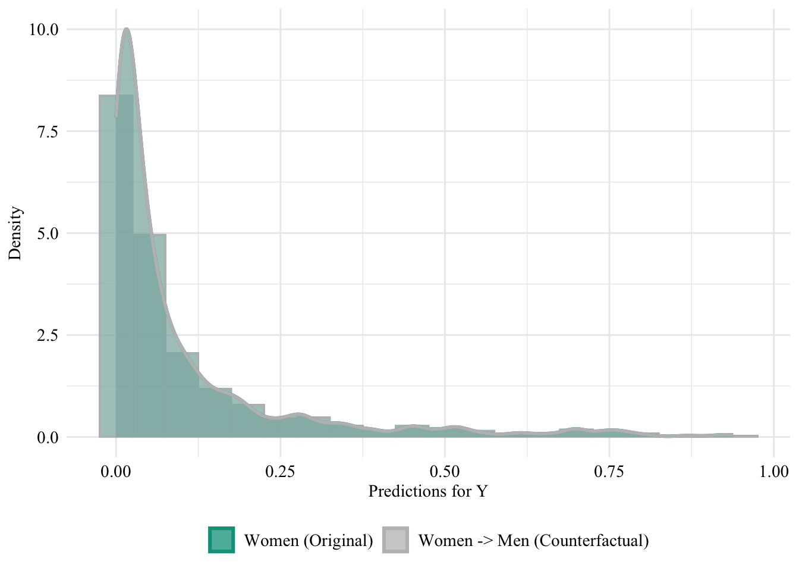
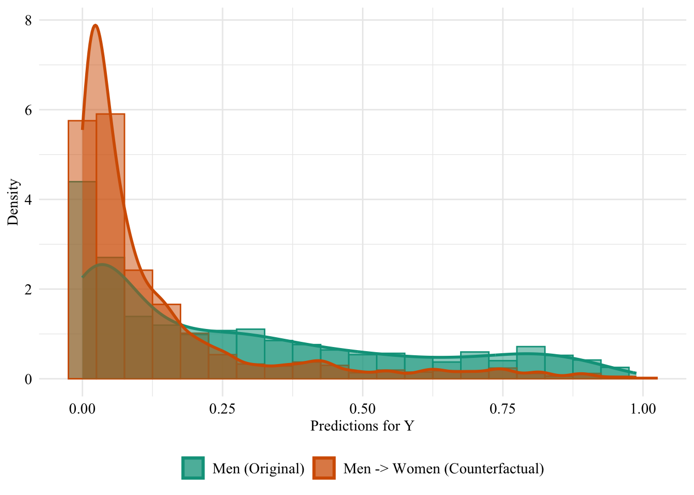
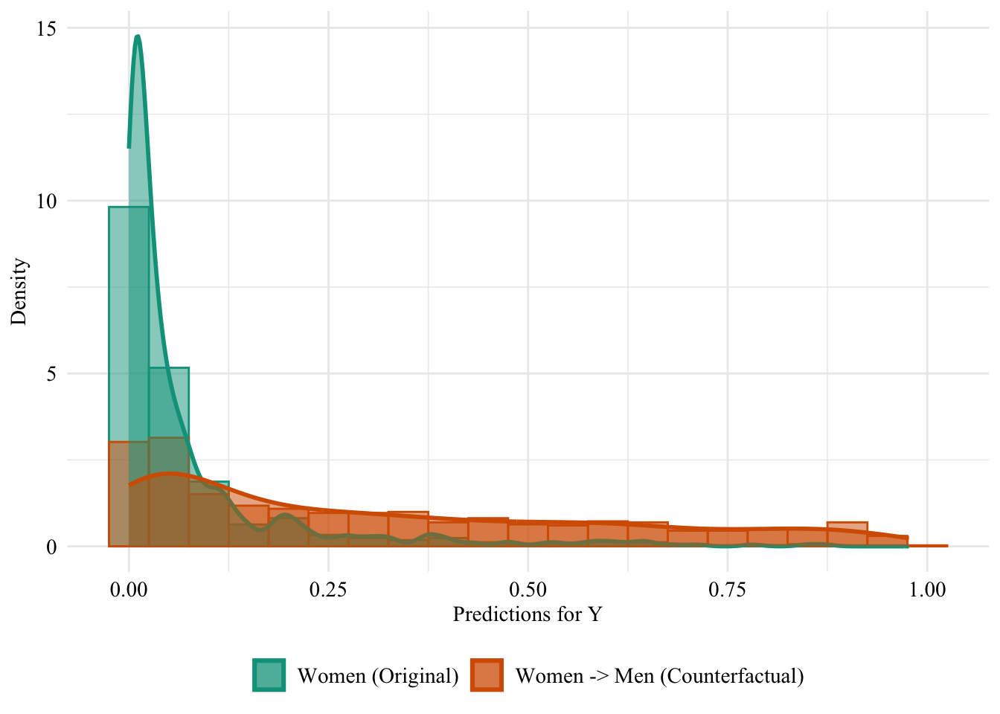
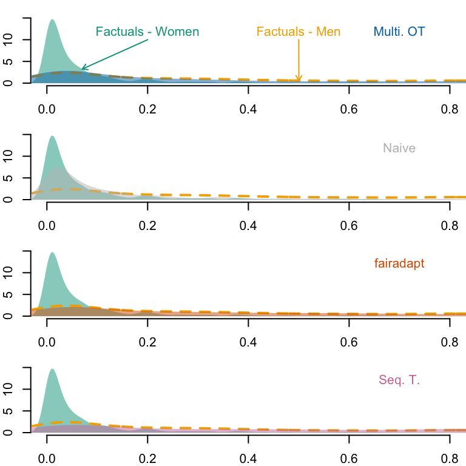

In this chapter, we extend the analysis from the previous part to the Adult Income dataset from the UCI Machine Learning Repository. We use a cleaned version of this dataset available in the {fairadapt} R package.
The adult dataset contains information that allow to predict whether a person’s income (Y) is over $50,000 a year. We will use gender as the protected binary variable here (S). Other characteristics such as the age, the native country, the marital status and so on will be used. Note that unlike previously, the set of covariates includes both numerical and categorical variables.
We load functions defined in our small package (notably, split_dataset()):
library(devtools)load_all("../seqtransfairness/")
ℹ Loading seqtransfairness
We fit a logistic regression model on the data to predict the outcome binary variable. First, we split the dataset into two sets: train (70%) and test (30%).
unaware logistic regression classifier: model without including the sensitive attribute.
aware logistic regression classifier: model with the sensitive attribute included in the set of features.
To do so, we define the training function, log_reg_train().
The log_reg_train() function.
#' @param train_data Train set.#' @param test_data Test set.#' @param s Name of the sensitive attribute.#' @param y Name of the target variable.#' @param type If `"type=aware"`, the model includes the sensitive attributes,#' otherwise, if `type=unaware`, it does not.#' #' @returns A list with three elements:#' * `model`: The estimated logistic regression model.#' * `pred_train`: Estimated scores on the train set.#' * `pred_test`: Estimated scores on the test set.#' #' @importFrom dplyr select#' @importFrom rlang !!#' @importFrom stats glm predict as.formulalog_reg_train <-function(train_data, test_data, s, y,type =c("aware", "unaware")) {if (type =="unaware") { train_data_ <- train_data %>%select(-!!s) test_data_ <- test_data %>%select(-!!s) } else { train_data_ <- train_data test_data_ <- test_data }# Train the logistic regression model form <-paste0(y, "~.") model <-glm(as.formula(form), data = train_data_, family = binomial)# Predictions on train and test sets pred_train <-predict(model, newdata = train_data_, type ="response") pred_test <-predict(model, newdata = test_data_, type ="response")list(model = model,pred_train = pred_train,pred_test = pred_test )}
Let us train the two models. Then, we extract the predicted values on both the train set and the test set.
# Unaware logistic regression classifier (model without S)pred_unaware <-log_reg_train(data_train, data_test, s = s, y = y, type ="unaware")
Warning in predict.lm(object, newdata, se.fit, scale = 1, type = if (type == :
prediction from rank-deficient fit; attr(*, "non-estim") has doubtful cases
pred_unaware_train <- pred_unaware$pred_trainpred_unaware_test <- pred_unaware$pred_test# Aware logistic regression classifier (model with S)pred_aware <-log_reg_train(data_train, data_test, s = s, y = y, type ="aware")
Warning in predict.lm(object, newdata, se.fit, scale = 1, type = if (type == :
prediction from rank-deficient fit; attr(*, "non-estim") has doubtful cases
We create a table for each model, with the sensitive attribute and the predicted value by the model (\(\hat{y}\)), only for observations from the test set.
Warning in predict.lm(object, newdata, se.fit, scale = 1, type = if (type == :
prediction from rank-deficient fit; attr(*, "non-estim") has doubtful cases
Warning in predict.lm(object, newdata, se.fit, scale = 1, type = if (type == :
prediction from rank-deficient fit; attr(*, "non-estim") has doubtful cases
Let us change the sensitive attribute of individuals from the source group (women) to the target group (men). Then, we use both models (unaware and aware) to predict the target binary variable.
Let us have a look at the distribution of the predicted scores of the classifier in both groups, when the predictions are made after setting the sex attribute of all women to “Male”. Since the model does not use the sensitive attribute, changing it will result in absolutely no change in its predictions in this case.
The predicted values using the initial characteristics (the factuals), for the unaware model are stored in the object pred_unaware_all. We put in a table the initial characteristics (factuals) and the prediction made by the unaware model:
Figure 13.3: Unaware model, Sensitive: Sex, Woman -> Man
Then, we focus on the distribution of predicted scores for ccounterfactual of Women and factuals of men. Again, since the model is blind to the sensitive attribute, the distributions are perfectly aligned.
Codes used to create the Figure.
ggplot(data = unaware_naive_women |>mutate(group =case_when( sex_origin =="Female"& sex =="Female"~"Women (Original)", sex_origin =="Female"& sex =="Male"~"Women -> Men (Counterfactual)", sex_origin =="Male"& sex =="Male"~"Men (Original)" ),group =factor( group, levels =c("Women (Original)", "Women -> Men (Counterfactual)", "Men (Original)" ) ) ) |>filter(sex_origin =="Female"),mapping =aes(x = pred, fill = group, colour = group)) +geom_histogram(mapping =aes(y =after_stat(density)), alpha =0.5, position ="identity", binwidth =0.05 ) +geom_density(alpha =0.5, linewidth =1) +scale_fill_manual(NULL, values =c("Women (Original)"= colours_all[["source"]],"Women -> Men (Counterfactual)"= colours_all[["naive"]],"Men (Original)"= colours_all[["reference"]] ) ) +scale_colour_manual(NULL, values =c("Women (Original)"= colours_all[["source"]],"Women -> Men (Counterfactual)"= colours_all[["naive"]],"Men (Original)"= colours_all[["reference"]] ) ) +labs(x ="Predictions for Y",y ="Density" ) +global_theme() +theme(legend.position ="bottom")
Figure 13.4: Distribution of Predicted Scores for Minority Class (Women), Unaware model, Sensitive: Race, Woman -> Man

13.2.2 Aware Model
We turn to the aware model. This time, the sensitive attribute is used by the classifier when it is trained. Hence, changing the sensitive attribute of individuals in the source group to that of the target group may change the predicted values for the binary outcome variable.
The predicted values by the model, on the initial characteristics (on the factuals) are stored in the pred_aware_all object.
We create a tibble with the factuals and the predictions by the aware model:
Figure 13.5: Aware model, Sensitive: Sex, Woman -> Man
Then, we focus on the distribution of predicted scores for ccounterfactual of Women and factuals of men.
Codes used to create the Figure.
ggplot(data = aware_naive_women |>mutate(group =case_when( sex_origin =="Female"& sex =="Female"~"Women (Original)", sex_origin =="Female"& sex =="Male"~"Women -> Men (Counterfactual)", sex_origin =="Male"& sex =="Male"~"Men (Original)" ),group =factor( group, levels =c("Women (Original)", "Women -> Men (Counterfactual)", "Men (Original)" ) ) ) |>filter(sex_origin =="Female"),mapping =aes(x = pred, fill = group, colour = group)) +geom_histogram(mapping =aes(y =after_stat(density)), alpha =0.5, position ="identity", binwidth =0.05 ) +geom_density(alpha =0.5, linewidth =1) +scale_fill_manual(NULL, values =c("Women (Original)"= colours_all[["source"]],"Women -> Men (Counterfactual)"= colours_all[["naive"]],"Men (Original)"= colours_all[["reference"]] ) ) +scale_colour_manual(NULL, values =c("Women (Original)"= colours_all[["source"]],"Women -> Men (Counterfactual)"= colours_all[["naive"]],"Men (Original)"= colours_all[["reference"]] ) ) +labs(x ="Predictions for Y",y ="Density" ) +global_theme() +theme(legend.position ="bottom")
Figure 13.6: Distribution of Predicted Scores for Minority Class (Women), Aware model, Sensitive: Race, Woman -> Man
13.3 Multivariate Optimal Transport
We apply multivariate optimal transport (OT), following the methodology developed in De Lara et al. (2024).
The codes are run in python. We use the {reticulate} R package to call python in this notebook. Let us save the dataset in a CSV format so we can easily import in in python.
For categorical variables, we use the hamming distance.
cat_dists =list()for col in cat_cols: dist = cdist(cat_0_encoded[col].to_numpy(), cat_1_encoded[col].to_numpy(), metric='euclidean') cat_dists.append(dist)
Then we need to combine the two distance matrices. We use weights equal to the proportion of numerical variables and the proportion of categorical variables, respectively for distances based on numerical and categorical variables.
# Weight for numerical distance#alpha = len(num_cols) / (len(num_cols) + len(cat_cols))#combined_cost = alpha * num_dist#for i in range(len(cat_dists)):# beta = .5 / category_counts.iloc[i]# combined_cost += beta * cat_dists[i]combined_cost = num_distfor i inrange(len(cat_dists)): combined_cost += cat_dists[i]
Rows: 662 Columns: 7
── Column specification ────────────────────────────────────────────────────────
Delimiter: ","
chr (4): native_country, marital_status, workclass, occupation
dbl (3): age, education_num, hours_per_week
ℹ Use `spec()` to retrieve the full column specification for this data.
ℹ Specify the column types or set `show_col_types = FALSE` to quiet this message.
We make predictions based on those counterfactuals obtained with multivariate optimal transport, on both models (the unaware model, and the aware model):
pred_ot_unaware <-predict( model_unaware, newdata = df_counterfactuals_ot_women, type ="response")pred_ot_aware <-predict( model_aware, newdata = df_counterfactuals_ot_women, type ="response")
counterfactuals_unaware_ot_women <- df_counterfactuals_ot_women |>mutate(pred = pred_ot_unaware, type ="counterfactual")counterfactuals_aware_ot_women <- df_counterfactuals_ot_women |>mutate(pred = pred_ot_aware, type ="counterfactual")
Let us put in a single table the predictions made by the classifier (either aware or unaware) on Women based on their factual characteristics, and those made based on the counterfactuals:
ggplot(data = unaware_fpt_women |>mutate(group =case_when( sex_origin =="Female"& sex =="Female"~"Women (Original)", sex_origin =="Female"& sex =="Male"~"Women -> Men (Counterfactual)", sex_origin =="Male"& sex =="Male"~"Men (Original)" ),group =factor( group, levels =c("Women (Original)", "Women -> Men (Counterfactual)", "Men (Original)" ) ) ) |>filter(sex_origin =="Female"),mapping =aes(x = pred, fill = group, colour = group)) +geom_histogram(mapping =aes(y =after_stat(density)), alpha =0.5, position ="identity", binwidth =0.05 ) +geom_density(alpha =0.5, linewidth =1) +scale_fill_manual(NULL, values =c("Women (Original)"= colours_all[["source"]],"Women -> Men (Counterfactual)"= colours_all[["fairadapt"]],"Men (Original)"= colours_all[["reference"]] ) ) +scale_colour_manual(NULL, values =c("Women (Original)"= colours_all[["source"]],"Women -> Men (Counterfactual)"= colours_all[["fairadapt"]],"Men (Original)"= colours_all[["reference"]] ) ) +labs(x ="Predictions for Y",y ="Density" ) +global_theme() +theme(legend.position ="bottom")
Figure 13.13: Distribution of Predicted Scores for Minority Class (Women), Unaware model, Sensitive: Sex, Woman -> Man
Codes used to create the Figure.
ggplot(data = unaware_fpt_men |>mutate(group =case_when( sex_origin =="Male"& sex =="Male"~"Men (Original)", sex_origin =="Male"& sex =="Female"~"Men -> Women (Counterfactual)", sex_origin =="Female"& sex =="Female"~"Women (Original)" ),group =factor( group, levels =c("Men (Original)", "Men -> Women (Counterfactual)", "Women (Original)" ) ) ) |>filter(sex_origin =="Male"),mapping =aes(x = pred, fill = group, colour = group)) +geom_histogram(mapping =aes(y =after_stat(density)), alpha =0.5, position ="identity", binwidth =0.05 ) +geom_density(alpha =0.5, linewidth =1) +scale_fill_manual(NULL, values =c("Men (Original)"= colours_all[["source"]],"Men -> Women (Counterfactual)"= colours_all[["fairadapt"]] ) ) +scale_colour_manual(NULL, values =c("Men (Original)"= colours_all[["source"]],"Men -> Women (Counterfactual)"= colours_all[["fairadapt"]] ) ) +labs(x ="Predictions for Y",y ="Density" ) +global_theme() +theme(legend.position ="bottom")
Figure 13.14: Distribution of Predicted Scores for Minority Class (White), Unaware model, Sensitive: Race, Man -> Woman

13.4.2 Aware Model
Now, we turn to the model that includes the sensitive attribute, i.e., the aware model. Let us get the predicted values for the counterfactuals, using the aware model:
ggplot(data = aware_fpt_women |>mutate(group =case_when( sex_origin =="Female"& sex =="Female"~"Women (Original)", sex_origin =="Female"& sex =="Male"~"Women -> Men (Counterfactual)", sex_origin =="Male"& sex =="Male"~"Men (Original)" ),group =factor( group, levels =c("Women (Original)", "Women -> Men (Counterfactual)", "Men (Original)" ) ) ) |>filter(sex_origin =="Female"),mapping =aes(x = pred, fill = group, colour = group)) +geom_histogram(mapping =aes(y =after_stat(density)), alpha =0.5, position ="identity", binwidth =0.05 ) +geom_density(alpha =0.5, linewidth =1) +scale_fill_manual(NULL, values =c("Women (Original)"= colours_all[["source"]],"Women -> Men (Counterfactual)"= colours_all[["fairadapt"]],"Men (Original)"= colours_all[["reference"]] ) ) +scale_colour_manual(NULL, values =c("Women (Original)"= colours_all[["source"]],"Women -> Men (Counterfactual)"= colours_all[["fairadapt"]],"Men (Original)"= colours_all[["reference"]] ) ) +labs(x ="Predictions for Y",y ="Density" ) +global_theme() +theme(legend.position ="bottom")
Figure 13.17: Distribution of Predicted Scores for Minority Class (Women), Aware model, Sensitive: Race, Reference: Men individuals

Codes used to create the Figure.
ggplot(data = aware_fpt_men |>mutate(group =case_when( sex_origin =="Male"& sex =="Male"~"Men (Original)", sex_origin =="Male"& sex =="Female"~"Men -> Women (Counterfactual)", sex_origin =="Female"& sex =="Female"~"Women (Original)" ),group =factor( group, levels =c("Men (Original)", "Men -> Women (Counterfactual)", "Women (Original)" ) ) ) |>filter(sex_origin =="Male"),mapping =aes(x = pred, fill = group, colour = group)) +geom_histogram(mapping =aes(y =after_stat(density)), alpha =0.5, position ="identity", binwidth =0.05 ) +geom_density(alpha =0.5, linewidth =1) +scale_fill_manual(NULL, values =c("Men (Original)"= colours_all[["source"]],"Men -> Women (Counterfactual)"= colours_all[["fairadapt"]] ) ) +scale_colour_manual(NULL, values =c("Men (Original)"= colours_all[["source"]],"Men -> Women (Counterfactual)"= colours_all[["fairadapt"]] ) ) +labs(x ="Predictions for Y",y ="Density" ) +global_theme() +theme(legend.position ="bottom")
Figure 13.18: Distribution of Predicted Scores for Minority Class (Men), Aware model, Sensitive: Race, Reference: Women individuals
13.5 Sequential Transport
We now turn to sequential transport (the methodology developed in our paper). We use the seq_trans() function defined in our small package to perform a fast sequential transport on causal graph.
sequential_transport <-seq_trans(data = adult, adj = adj_mat, s ="sex", S_0 ="Female", y ="income")
Transporting age
Transporting native_country
Transporting marital_status
# weights: 4 (3 variable)
initial value 927.430928
final value 779.199404
converged
Transporting education_num
Transporting workclass
# weights: 24 (15 variable)
initial value 1854.861855
iter 10 value 1418.843645
iter 20 value 1226.860388
final value 1224.646984
converged
Transporting hours_per_week
Transporting occupation
Warning in nnet::multinom(x_S0 ~ ., data = mutate(data_1_parents, x_S0 =
x_S1)): group 'Armed-Forces' is empty
# weights: 84 (65 variable)
initial value 3531.058707
iter 10 value 3268.247749
iter 20 value 3150.146313
iter 30 value 3013.347818
iter 40 value 2880.348969
iter 50 value 2868.888514
iter 60 value 2865.551923
iter 70 value 2864.693363
iter 80 value 2864.661456
iter 90 value 2864.641525
final value 2864.640591
converged
We build a dataset with the sensitive attribute of Women changed to Male, and their characteristics changed to their transported characteristics:
We make predictions based on those counterfactuals obtained with sequential transport, on both models (the unaware model, and the aware model):
pred_seq_unaware <-predict( model_unaware, newdata = df_counterfactuals_seq_women, type ="response")pred_seq_aware <-predict( model_aware, newdata = df_counterfactuals_seq_women, type ="response")
counterfactuals_unaware_seq_women <- df_counterfactuals_seq_women |>mutate(pred = pred_seq_unaware, type ="counterfactual")counterfactuals_aware_seq_women <- df_counterfactuals_seq_women |>mutate(pred = pred_seq_aware, type ="counterfactual")
Let us put in a single table the predictions made by the classifier (either aware or unaware) on Women based on their factual characteristics, and those made based on the counterfactuals:
# Factualstb_unaware_factuals <- tb_unaware |>filter(counterfactual =="none")# Predicted valuespred_unaware_factuals_women <- tb_unaware_factuals |>filter(sex =="Female") |>pull("pred")pred_unaware_factuals_men <- tb_unaware_factuals |>filter(sex =="Male") |>pull("pred")# Estimated densitiesd_unaware_factuals_women <-density(pred_unaware_factuals_women)d_unaware_factuals_men <-density(pred_unaware_factuals_men)par(mfrow =c(4, 1), mar =c(2, 2, 0, 0))x_lim <-c(0, .8)y_lim <-c(0, 10)# OTtb_unaware_ot <- tb_unaware |>filter(counterfactual =="ot")# Predicted values, focusing on Black --> Whitepred_unaware_ot_women_star <- tb_unaware_ot |>filter(sex_origin =="Female") |>pull("pred")# Estimated densitiesd_unaware_ot_women_star <-density(pred_unaware_ot_women_star)plot( d_unaware_factuals_women,main ="", xlab ="", ylab ="",axes =FALSE, col =NA,xlim = x_lim, ylim = y_lim)axis(1)axis(2)polygon(d_unaware_factuals_women, col =alpha(colours_all[["source"]], .5), border =NA)lines(d_unaware_factuals_men, col = colours_all[["reference"]], lty =2, lwd =2)polygon(d_unaware_ot_women_star, col =alpha(colours_all[["ot"]], .5), border =NA)text(x = .2, y =6.5, "Factuals - Women", col = colours_all[["source"]])pos_arrow <- .07ind_min <-which.min(abs(d_unaware_factuals_women$x - pos_arrow))arrows(x1 = d_unaware_factuals_women$x[ind_min],y1 = d_unaware_factuals_women$y[ind_min],x0 = .2, y0 =5,length =0.05, col = colours_all[["source"]])pos_arrow_ref <- .5text(x = pos_arrow_ref, y =6.5, "Factuals - Men", col = colours_all[["reference"]])ind_min_ref <-which.min(abs(d_unaware_factuals_men$x - pos_arrow_ref))arrows(x1 = d_unaware_factuals_men$x[ind_min_ref],y1 = d_unaware_factuals_men$y[ind_min_ref],x0 = pos_arrow_ref, y0 =5,length =0.05, col = colours_all[["reference"]])text(x = .7, y =6.5, "Multi. OT", col = colours_all[["ot"]])# Naivetb_unaware_naive <- tb_unaware |>filter(counterfactual =="naive")# Predicted values, focusing on Black --> Whitepred_unaware_naive_women_star <- tb_unaware_naive |>filter(sex =="Male") |>pull("pred")# Estimated densitiesd_unaware_naive_women_star <-density(pred_unaware_naive_women_star)plot( d_unaware_factuals_women,main ="", xlab ="", ylab ="",axes =FALSE, col =NA,xlim = x_lim, ylim = y_lim)axis(1)axis(2)polygon(d_unaware_factuals_women, col =alpha(colours_all[["source"]], .5), border =NA)lines(d_unaware_factuals_men, col = colours_all[["reference"]], lty =2, lwd =2)polygon(d_unaware_naive_women_star, col =alpha(colours_all[["naive"]], .5), border =NA)text(x = .7, y =6.5, "Naive", col = colours_all[["naive"]])# Fairadapttb_unaware_fpt <- tb_unaware |>filter(counterfactual =="fpt")# Predicted values, focusing on Black --> Whitepred_unaware_fpt_women_star <- tb_unaware_fpt |>filter(sex =="Male") |>pull("pred")# Estimated densitiesd_unaware_fpt_women_star <-density(pred_unaware_fpt_women_star)plot( d_unaware_factuals_women,main ="", xlab ="", ylab ="",axes =FALSE, col =NA,xlim = x_lim, ylim = y_lim)axis(1)axis(2)polygon(d_unaware_factuals_women, col =alpha(colours_all[["source"]], .5), border =NA)lines(d_unaware_factuals_men, col = colours_all[["reference"]], lty =2, lwd =2)polygon(d_unaware_fpt_women_star, col =alpha(colours_all[["fairadapt"]], .5), border =NA)text(x = .7, y =6.5, "fairadapt", col = colours_all[["fairadapt"]])# Sequential transporttb_unaware_seq <- tb_unaware |>filter(counterfactual =="seq")# Predicted values, focusing on Black --> Whitepred_unaware_seq_women_star <- tb_unaware_seq |>filter(sex =="Male") |>pull("pred")# Estimated densitiesd_unaware_seq_women_star <-density(pred_unaware_seq_women_star)plot( d_unaware_factuals_women,main ="", xlab ="", ylab ="",axes =FALSE, col =NA,xlim = x_lim, ylim = y_lim)axis(1)axis(2)polygon(d_unaware_factuals_women, col =alpha(colours_all[["source"]], .5), border =NA)lines(d_unaware_factuals_men, col = colours_all[["reference"]], lty =2, lwd =2)polygon(d_unaware_seq_women_star, col =alpha(colours_all[["seq"]], .5), border =NA)text(x = .7, y =6.5, "Seq. T.", col = colours_all[["seq"]])
Figure 13.23: Densities of predicted scores for Women with factuals and with counterfactuals. The yellow dashed line corresponds to the density of predicted scores for Women, using factuals.
Codes used to create the Figure.
tb_aware_factuals <- tb_aware |>filter(counterfactual =="none")# Predicted valuespred_aware_factuals_women <- tb_aware_factuals |>filter(sex =="Female") |>pull("pred")pred_aware_factuals_men <- tb_aware_factuals |>filter(sex =="Male") |>pull("pred")# Estimated densitiesd_aware_factuals_women <-density(pred_aware_factuals_women)d_aware_factuals_men <-density(pred_aware_factuals_men)par(mfrow =c(4, 1), mar =c(2, 2, 1, 0))x_lim <-c(0, .8)y_lim <-c(0, 15)# OTtb_aware_ot <- tb_aware |>filter(counterfactual =="ot")# Predicted values, focusing on Black --> Whitepred_aware_ot_women_star <- tb_aware_ot |>filter(sex_origin =="Female") |>pull("pred")# Estimated densitiesd_aware_ot_women_star <-density(pred_aware_ot_women_star)plot( d_aware_factuals_women,main ="", xlab ="", ylab ="",axes =FALSE, col =NA,xlim = x_lim, ylim = y_lim)axis(1)axis(2)polygon(d_aware_factuals_women, col =alpha(colours_all[["source"]], .5), border =NA)lines(d_aware_factuals_men, col = colours_all[["reference"]], lty =2, lwd =2)polygon(d_aware_ot_women_star, col =alpha(colours_all[["ot"]], .5), border =NA)text(x = .2, y =12, "Factuals - Women", col = colours_all[["source"]])pos_arrow <- .07ind_min <-which.min(abs(d_aware_factuals_women$x - pos_arrow))arrows(x1 = d_aware_factuals_women$x[ind_min],y1 = d_aware_factuals_women$y[ind_min],x0 = .2, y0 =10,length =0.05, col = colours_all[["source"]])pos_arrow_ref <- .5text(x = pos_arrow_ref, y =12, "Factuals - Men", col = colours_all[["reference"]])ind_min_ref <-which.min(abs(d_aware_factuals_men$x - pos_arrow_ref))arrows(x1 = d_aware_factuals_men$x[ind_min_ref],y1 = d_aware_factuals_men$y[ind_min_ref],x0 = pos_arrow_ref, y0 =10,length =0.05, col = colours_all[["reference"]])text(x = .7, y =12, "Multi. OT", col = colours_all[["ot"]])# Naivetb_aware_naive <- tb_aware |>filter(counterfactual =="naive")# Predicted values, focusing on Black --> Whitepred_aware_naive_women_star <- tb_aware_naive |>filter(sex =="Male") |>pull("pred")# Estimated densitiesd_aware_naive_women_star <-density(pred_aware_naive_women_star)plot( d_aware_factuals_women,main ="", xlab ="", ylab ="",axes =FALSE, col =NA,xlim = x_lim, ylim = y_lim)axis(1)axis(2)polygon(d_aware_factuals_women, col =alpha(colours_all[["source"]], .5), border =NA)lines(d_aware_factuals_men, col = colours_all[["reference"]], lty =2, lwd =2)polygon(d_aware_naive_women_star, col =alpha(colours_all[["naive"]], .5), border =NA)text(x = .7, y =12, "Naive", col = colours_all[["naive"]])# Fairadapttb_aware_fpt <- tb_aware |>filter(counterfactual =="fpt")# Predicted values, focusing on Black --> Whitepred_aware_fpt_women_star <- tb_aware_fpt |>filter(sex =="Male") |>pull("pred")# Estimated densitiesd_aware_fpt_women_star <-density(pred_aware_fpt_women_star)plot( d_aware_factuals_women,main ="", xlab ="", ylab ="",axes =FALSE, col =NA,xlim = x_lim, ylim = y_lim)axis(1)axis(2)polygon(d_aware_factuals_women, col =alpha(colours_all[["source"]], .5), border =NA)lines(d_aware_factuals_men, col = colours_all[["reference"]], lty =2, lwd =2)polygon(d_aware_fpt_women_star, col =alpha(colours_all[["fairadapt"]], .5), border =NA)text(x = .7, y =12, "fairadapt", col = colours_all[["fairadapt"]])# Sequential transporttb_aware_seq <- tb_aware |>filter(counterfactual =="seq")# Predicted values, focusing on Black --> Whitepred_aware_seq_women_star <- tb_aware_seq |>filter(sex =="Male") |>pull("pred")# Estimated densitiesd_aware_seq_women_star <-density(pred_aware_seq_women_star)plot( d_aware_factuals_women,main ="", xlab ="", ylab ="",axes =FALSE, col =NA,xlim = x_lim, ylim = y_lim)axis(1)axis(2)polygon(d_aware_factuals_women, col =alpha(colours_all[["source"]], .5), border =NA)lines(d_aware_factuals_men, col = colours_all[["reference"]], lty =2, lwd =2)polygon(d_aware_seq_women_star, col =alpha(colours_all[["seq"]], .5), border =NA)text(x = .7, y =12, "Seq. T.", col = colours_all[["seq"]])
Figure 13.24: Densities of predicted scores for Women with factuals and with counterfactuals. The yellow dashed line corresponds to the density of predicted scores for Women, using factuals.

13.7 Metrics
We now turn to some metrics based on the predictions made for each model, based on the factual values in each group \(\boldsymbol{x}\), and on the counterfactual values \(\boldsymbol{x}^\star\) for individuals from the group of Women \(\mathcal{D}_0\). For most metrics, the scoring classifier \(m(\cdot)\) is transformed into a threshold-based classifier \(m_t(\cdot)\), where \(m_t(\cdot)=1\) if \(m(\cdot) > t\), and \(m_t(\cdot)=0\) otherwise. We set the threshold to \(t=.5\).
threshold <- .5
Let us get vectors of observes values \(x_i \in \mathcal{D}\) as well as predicted scores for factual observations \(m(s_i, \boldsymbol{x}_i)\) and for counterfactual observations for individuals in \(\mathcal{D_0}\), i.e., \(m(1, \boldsymbol{x}_i^\star)\).
# Observed target variableobs_0 <- factuals_aware |>filter(sex_origin =="Female") |>pull("income")obs_1 <- factuals_aware |>filter(sex_origin =="Male") |>pull("income")# Scores using factualspred_0_aware <- factuals_aware |>filter(sex_origin =="Female") |>pull("pred")pred_1_aware <- factuals_aware |>filter(sex_origin =="Male") |>pull("pred")pred_0_unaware <- factuals_unaware |>filter(sex_origin =="Female") |>pull("pred")pred_1_unaware <- factuals_unaware |>filter(sex_origin =="Male") |>pull("pred")# Scores in groups S="Female" using naive counterfactualspred_0_naive_aware <- pred_aware_naive_womenpred_0_naive_unaware <- pred_unaware_naive_women# Scores in groups S="Female" using multivariate optimal transport counterfactualspred_0_ot_aware <- pred_ot_awarepred_0_ot_unaware <- pred_ot_unaware# Scores in groups S="Female" using fairadapt counterfactualspred_0_fpt_aware <- pred_aware_fpt_womenpred_0_fpt_unaware <- pred_unaware_fpt_women# Scores in groups S="Female" using sequential transport counterfactualspred_0_seq_aware <- pred_seq_awarepred_0_seq_unaware <- pred_seq_unaware
Then, we use the counter_fair_metrics() function from our package to compute the metrics presented in Section 12.4.
De Lara, Lucas, Alberto González-Sanz, Nicholas Asher, Laurent Risser, and Jean-Michel Loubes. 2024. “Transport-Based Counterfactual Models.”Journal of Machine Learning Research 25 (136): 1–59.
Plečko, Drago, and Nicolai Meinshausen. 2020. “Fair Data Adaptation with Quantile Preservation.”Journal of Machine Learning Research 21 (242): 1–44.